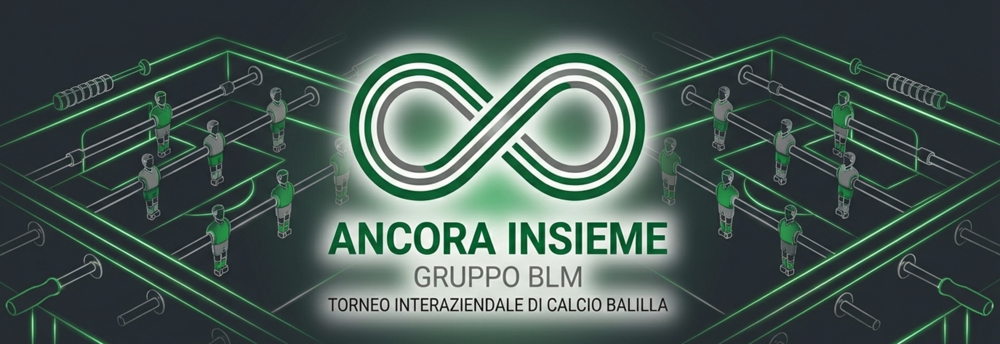

Edizione n. 2
Edizione n. 1

Ogni settimana raccontiamo il torneo benefico Ancora Insieme. Non solo classifiche e risultati, ma anche le persone, le curiosità, le battute e lo spirito che rendono speciale questa iniziativa.